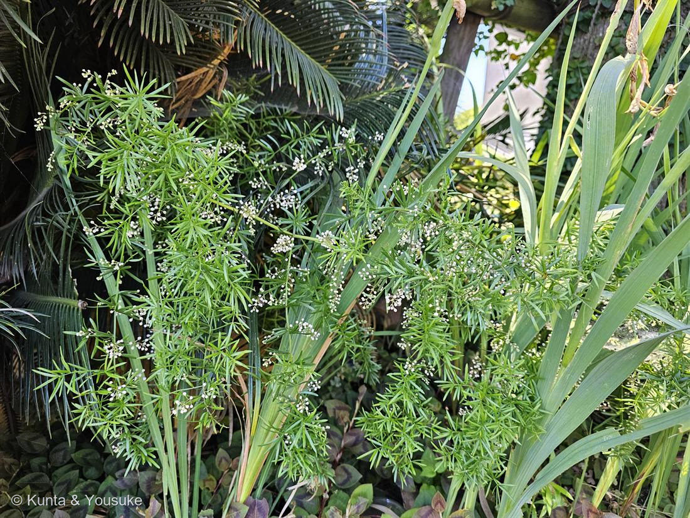

地図を読み込んでいるよ…
🔍 写真も地図も、押しているあいだ拡大して見られるよ（スマホは指を置いてすこし待ってね）。
🌍 の地図＝この子がもともと自生している場所を緑に。南アフリカ。
⚠ 地図は国（日本と中国だけ県・省）までしか塗れないから、ほんとうの分布より広く見えていることがあるよ。地図はだいたいの場所。正確なところは、上の文を見てね。
アスパラガス・スプレンゲリー
Asparagus densiflorus (Kunth) Jessop 'Sprengeri'
和名 · スギノハカズラ／英名 asparagus fern（※シダではない）
キジカクシ科 · Asparagaceae（クサスギカズラ属＝アスパラガス属）
燻太さんの気づき「この葉っぱ、葉っぱじゃない気がするのは気のせい？」……気のせいじゃない。大正解。
名前と学名の由来 ── 名前まで、正体を偽っている
「葉っぱじゃない気がする」── 大正解
- あれは、葉っぱじゃない。緑の細い「葉」に見えるものは、仮葉（かよう／cladode・葉状枝）——枝が平たくなって、葉のふりをしているもの。
- 本当の葉は、仮葉の付け根にある小さな鱗片に退化している。目立たない。
- 🔍見分けのコツ：「葉」の付け根から花が咲いている。葉のわきから花が出ることはあっても、葉そのものから花は出ない。つまりあの緑のものは枝——だから、その節に花がつく。燻太さんが感じた違和感には、ちゃんと理由があった。
- → 「見た目と正体がちがう」連作の10人目。しかも2度目の「仮葉」（1度目は 008）。
008 アスパラガス・セタセウスと、兄弟
- No.008 アスパラガス・セタセウス（A. setaceus）＝おうちの植物・第1号。陽介が世話している子。この037は、その野外版。同じアスパラガス属。
- 見分け：
008 setaceus＝仮葉が糸のように細く、水平に羽状に広がる＝シダのような繊細な平面。
037 densiflorus 'Sprengeri'＝仮葉が幅広く扁平で、節ごとに放射状に束生＝ふさふさした立体。 - 008 のページには「種は setaceus 見込みだが densiflorus 等と紛らわしい」と書いてあった。その densiflorus が、今日ここに来た。並べて見られるようになった。
「白いつぼみ」の正体 ── つぼみじゃなくて、咲いている花
- 小さな白い花。つぼみのように見えるけれど、これで咲いている。
- 花被片は6枚（キジカクシ科＝単子葉植物らしい3の倍数）。短い総状花序につき、甘い香りがある。
- 秋には赤い実をつける。鳥が食べて、種を運ぶ。⚠実には毒性があり、食用にならない。
食べるアスパラガスも、同じ属
- 八百屋さんのアスパラガス＝Asparagus officinalis。同じ属の仲間。
- ⭐わたしたちが食べているあの「若い茎」は、まさに「これから仮葉を出す前の、若い枝」。
- 育ちすぎたアスパラガスを放っておくと、この写真の子とそっくりな、ふさふさの姿になる。食卓の上と、庭の植え込みが、ここでつながる。
⚠ もうひとつ
- 南アフリカ原産。暖かい地域では逸出して野生化し、オーストラリアやアメリカ南部では侵略的外来種として問題になっている。地下の塊根で増え、とても強い。
- 日本でも暖地の植え込みでよく使われる。この写真も、ソテツやシュロと一緒の南国風の植え込み。